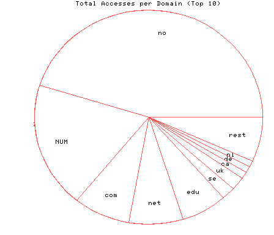
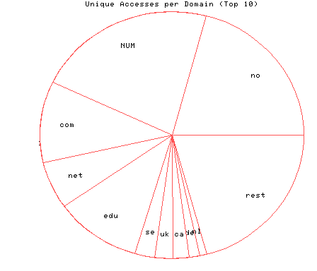

HTTP Server Domain Statistics
Covers: 10/09/95 to 10/14/95 (6 days).
All dates are in local time.
1 level, sorted by number of requests, 77 unique domains.
278622 : 5836 : 10/14/95 : Norway (.no) 117163 : 6213 : 10/14/95 : (numerical domains) 49627 : 2996 : 10/14/95 : US Commercial (.com) 47326 : 1749 : 10/14/95 : Network (.net) 39956 : 2988 : 10/14/95 : US Educational (.edu) 12506 : 694 : 10/14/95 : Sweden (.se) 12257 : 612 : 10/14/95 : United Kingdom (.uk) 6297 : 566 : 10/14/95 : Canada (.ca) 6179 : 344 : 10/14/95 : Germany (.de) 5483 : 263 : 10/14/95 : Netherlands (.nl) 3894 : 241 : 10/14/95 : Australia (.au) 3191 : 185 : 10/14/95 : Finland (.fi) 2744 : 186 : 10/14/95 : Denmark (.dk) 2616 : 208 : 10/14/95 : Japan (.jp) 2591 : 155 : 10/14/95 : France (.fr) 2590 : 165 : 10/14/95 : Italy (.it) 1871 : 148 : 10/14/95 : Non-Profit (.org) 1797 : 95 : 10/13/95 : Switzerland (.ch) 1724 : 168 : 10/14/95 : US Government (.gov) 1706 : 39 : 10/14/95 : Iceland (.is) 1536 : 140 : 10/14/95 : United States (.us) 940 : 73 : 10/14/95 : US Military (.mil) 899 : 45 : 10/14/95 : Israel (.il) 792 : 59 : 10/14/95 : Singapore (.sg) 781 : 59 : 10/14/95 : Belgium (.be) 728 : 39 : 10/14/95 : Austria (.at) 564 : 51 : 10/14/95 : Spain (.es) 499 : 19 : 10/14/95 : South Korea (.kr) 484 : 60 : 10/14/95 : Mexico (.mx) 460 : 46 : 10/13/95 : South Africa (.za) 448 : 21 : 10/14/95 : Chile (.cl) 421 : 48 : 10/14/95 : Malaysia (.my) 384 : 35 : 10/14/95 : New Zealand (.nz) 375 : 22 : 10/13/95 : Portugal (.pt) 359 : 29 : 10/14/95 : Hong Kong (.hk) 338 : 33 : 10/14/95 : Brazil (.br) 286 : 18 : 10/14/95 : Ireland (.ie) 280 : 21 : 10/14/95 : Thailand (.th) 247 : 14 : 10/14/95 : Slovenia (.si) 218 : 19 : 10/13/95 : Poland (.pl) 193 : 12 : 10/13/95 : Czech Republic (.cz) 172 : 4 : 10/13/95 : Great Britain (UK) (.gb) 146 : 9 : 10/13/95 : Luxembourg (.lu) 133 : 15 : 10/14/95 : Greece (.gr) 123 : 3 : 10/13/95 : International (.int) 114 : 8 : 10/13/95 : Hungary (.hu) 88 : 3 : 10/14/95 : Costa Rica (.cr) 87 : 6 : 10/13/95 : Indonesia (.id) 76 : 2 : 10/13/95 : Croatia (.hr) 71 : 3 : 10/12/95 : Latvia (.lv) 61 : 2 : 10/11/95 : Romania (.ro) 59 : 5 : 10/13/95 : Soviet Union (.su) 42 : 6 : 10/14/95 : Taiwan (.tw) 37 : 7 : 10/13/95 : Estonia (.ee) 36 : 5 : 10/14/95 : Russian Federation (.ru) 35 : 4 : 10/13/95 : China (.cn) 33 : 3 : 10/10/95 : Slovak Republic (.sk) 29 : 2 : 10/14/95 : Trinidad and Tobago (.tt) 29 : 2 : 10/14/95 : United Arab Emirates (.ae) 29 : 1 : 10/13/95 : Nepal (.np) 25 : 4 : 10/14/95 : Turkey (.tr) 22 : 1 : 10/11/95 : Ukraine (.ua) 21 : 1 : 10/10/95 : Armenia (.am) 19 : 1 : 10/11/95 : Greenland (.gl) 17 : 2 : 10/13/95 : Ecuador (.ec) 14 : 1 : 10/12/95 : Philippines (.ph) 14 : 1 : 10/10/95 : Lithuania (.lt) 12 : 6 : 10/14/95 : Argentina (.ar) 10 : 2 : 10/10/95 : Kuwait (.kw) 9 : 1 : 10/14/95 : Peru (.pe) 9 : 1 : 10/13/95 : Dominican Republic (.do) 8 : 2 : 10/13/95 : Faroe Islands (.fo) 7 : 1 : 10/09/95 : Bermuda (.bm) 5 : 2999 : 10/13/95 : Colombia (.co) 5 : 2 : 10/12/95 : Macau (.mo) 4 : 1 : 10/13/95 : Zambia (.zm) 2 : 2 : 10/12/95 : Egypt (.eg)

Statistics generated at Sat Oct 14 09:53:53 MET 1995, (C) Oslonett AS, 1995.